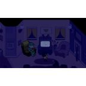

Category: Concepts & Lore
Category: Concepts & Lore
Balling, the Prophecy, and other things that cannot be explained, only believed. · 36 pages
The Flashback Chapter5GAwakens the twin.The Epic of VinnyAesopianThe language Aesop Rock speaks.Chapter Triangle"Aight Bet"“Aight Bet” is the canon's standard way of agreeing to something, and arguably its motto. It…Chapter Number New JerseyAIRPOWER!Steve Jobs turned into a Mac charging brick.Chris OriginsBallingThe fundamental force. Currently monopolized.Chris Origins"Bring Out the Lobster!!"A battle cry, and a garnish.Chapter 4+.1+.1…Chicken HourChicken hour is a time of day in the Projects during which guards are apparently not on the…

Chapter 4+.1+.1…[DETERMINATION][DETERMINATION] is the quality the Prophecy promises will fill the team of whoever meets its…The Flashback ChapterErger WingsA Mountain Dew refinery and restaurant. Coming eventually.The Flashback ChapterField of GamblingRequired for all gambling.Chapter the FourthGooberGoober is a word for a foolish or embarrassing person. In the canon, being one is a fear…Chapter 2"Ha Women"Jason's entire philosophy.The Epic of VinnyLying"An advanced technique." Very strongly used in acts of war.Chapter 4+.1+.1…MoggingMogging is the act of outclassing someone by sheer presence. It is a skill, a pastime and…Chris OriginsNFL PoisoningCause of death: football (somehow).The Epic of VinnyNo-clippingWalking through walls, on purpose or otherwise.The Epic of Vinny"Nuh uh" / "Yuh huh"Five rounds. No winner. Moves on.Dunder Mifflan"One More Thing"Let's end this.Chapter TrianglePog / Poggers / PogchampPog, along with poggers and pogchamp, is the canon's main measure of approval. Something…The Epic of VinnyThe 2-time 2-fingered Teleportation TechniquePeace sign. Think of a place. Twice only.The Epic of VinnyThe Age of ClaudeJuly 4th to October 29th, 1995. Began with a portal, ended with an Uber.Chris OriginsThe BallWhat Chris became.The Epic of VinnyA spin-off set on Garth, in the Kanye System, 1995 to 1996.Chris OriginsThe Ethereal Green Dot0.0836 seconds of existence.The Epic of VinnyThe Great Double Whopper with Cheese WarA multiversal war that will soon come to pass. Probably.Chapter TriangleThe ProphecySix apps, one contract, one court, still you.Chris OriginsThe Secret Teachings of Social MediaTwitter, MySpace, Instagram, Snapchat and, Facebook.The Epic of VinnyThe Super Bowl '96 PlotTo truly kill all humans: make the Dallas Cowboys win.Chapter 2The Toyota Corolla QuestionWhich Corolla? And is it even a Corolla?The Epic of VinnyThe Very Violent and Vivid ProphecyValuable. Vibrant. Vinny shall not be in Vain.The Epic of VinnyThe Ways of FreedomFreedom is the only thing you need.Chapter the FourthUnc Standard TimeWhere it is always 14:74pm somewhere.The Epic of VinnyVellatosisNot just a game theory. 2, 4, 8, 16, 32, 64, 128, and so forth.Chris OriginsWhy Do We Believe What We BelieveThe opening incantation.The Epic of Vinny"Wordle? More like Word-shit"A diss track about a word game. Now the most popular song.Chapter TriangleWormholesTheoretically could open. Usually does.Nothing matches. Much like Mic Q.